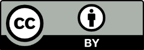

Voc4Cat Guidelines, Version 2.0¶
Note
The content in this section matches the Vocabulary Guidelines (v2.0) published on Zenodo in Sept-2024. The original docx-document was converted to markdown with the help of pandoc (v3.5) using the command:
pandoc --extract-media=. --from=docx "Voc4Cat Guidelines v2.docx" --to=commonmark --output=voc4cat-guidelines-v2.md
Suggested citation
Moustakas, N., Behr, A., Borgelt, H., Huskova, N., Khare, R., Talab, M.,
Köbl, J., Chandrashekhar, V., Petrenko, T., Dörr, M., & Linke, D. (2024).
Voc4Cat: Vocabulary guidelines for NFDI4Cat (2.0). Zenodo.
https://doi.org/10.5281/zenodo.13773255
Imprint
First edition: February 2023
Second edition: September 2024
LICENSE
This guidelines document (Version 2.0) is made available under the Creative Commons Attribution 4.0 International license (CC BY 4.0). Under the terms of this license, this work may be redistributed and reused, provided that the work is appropriately cited and the creators appropriately credited.
FUNDING
This work was funded by the German Research Foundation (DFG) through the project NFDI for Catalysis-Related Sciences (NFDI4Cat, DFG-project no. 441926934) within the National Research Data Infrastructure (NFDI) programme of the Joint Science Conference (GWK).
CONTACT
DECHEMA Gesellschaft für Chemische Technik und Biotechnologie e.V.
Theodor-Heuss-Allee 25
GE – 60486 Frankfurt am Main
Phone: 0049-69-7564-0
Fax: 0049-69-7564-117
Dr. Sara Espinoza
e-mail: sara.espinoza@dechema.de
Internet: https://www.dechema.de
Figure 1. Members of the NFDI4Cat consortium.¶
1. About NFDI4Cat & the motivation for Voc4Cat¶
Catalysis is a complex and interdisciplinary scientific field that enables the efficient production of a wide range of products for different industries and at different production scales. Thus, catalysis is one of the key technologies for addressing major challenges such as a sustainable energy supply or climate change. Data management in catalysis is currently organized mainly at an institutional or a working group level and based on local conventions. Overarching repositories and standards on how data including metadata should be stored exist only in rudimentary form.
To generate the highest possible added value from catalysis research, a fundamental change in catalysis research and catalysis-related sciences such as chemical engineering and process engineering is required. Bringing together the different disciplines of catalysis in terms of data management is the central challenge. Out of this need, the NFDI4Cat consortium was founded as part of the German National Research Data Infrastructure (NFDI) initiative.
Scientific data management should follow the FAIR guiding principles. This means that data are Findable, Accessible, Interoperable and Reusable.[1]
To this end, the development of shared, machine-readable vocabularies is of utmost importance to annotate data for machine consumption and to facilitate data reuse. In addition, such vocabulary is of great help to build even richer semantic descriptions in a form catalysis-specific in ontologies.
In the field of catalysis, no such vocabulary existed which motivated us to create Voc4Cat. Since Catalysis has no borders, we created Voc4Cat as an open, community managed resource that can be used and extended by the international community.
NFDI4Cat consists of 16 experienced German partners from all areas of catalysis. The disciplines of reaction and process engineering are also represented in the consortium. The catalysis and engineering competencies are complemented by expertise in the fields of data science, high-performance computing, and machine learning.
NFDI4Cat focuses on shaping the digital future of catalysis.
2. Voc4Cat: A catalysis-specific vocabulary¶
To create shareable and interoperable (meta) data in the field of catalysis research, the use of common machine-readable identifiers for terms and concepts avoids disambiguation and enables understanding by machines. This facilitates faster processing and enhances the findability and reusability of each (meta) data set. These machine-readable identifiers are included in field-specific vocabularies.
A vocabulary should be:
Formal: unified regularized spelling coupled with an international unique identifier (IRI) allowing for machine interpretability (e.g. concept “heterogeneous catalysis” with an IRI https://w3id.org/nfdi4cat/voc4cat_0007001).
Explicit: strict definitions allow for a common interpretation of synonymously used words and concepts
Shared: approved by the community and actively supported and curated.
Vocabularies form the basis of “ontologies” by defining the terms and concepts as well as simple relations between them. The standardized concepts having machine-readable identifiers, can in turn be used for, e.g., data annotation which increases data FAIRness. Such data are the basis for a graph-based knowledge representation.
Ontologies represent knowledge explicitly in a machine-readable way by interconnecting data via its properties, relations and constraints using standardized concepts within a specific domain. Moreover, ontologies allow logical reasoning and deriving new axioms by logical inference. As NFID4Cat has shown existing ontologies fail short to cover the often complex and diverse data in catalysis, emphasizing the need for further ontology development. [2]
As foundation for FAIR data and to provide a basis for developing a catalysis-specific ontology, a vocabulary dedicated for the field needs to be established.
Voc4Cat:
Is a catalysis-specific vocabulary supported by catalysis-community members.
Aims at a widespread adoption and standardization of concepts and definitions within the catalysis community.
Serves as the foundation for sharing machine-interoperable data within NFDI4Cat.
Is managed on GitHub as a repository under the NFDI4Cat organization.
Uses the SKOS (Simple Knowledge Organization System) Standard.
Is released under a permissive license (CC0) and open to community contribution.
Is brought to you by the members of Task Area 1 (TA1): Ontology Development and Metadata Standards of NFDI4Cat.
3. About the Voc4Cat guidelines¶
The Voc4Cat guidelines have been developed as a blueprint for suggesting, adding, and editing content to the vocabularies developed throughout NFDI4Cat. The aim of this document is to provide guidelines to guarantee consistency and coherence on selection of concepts and terms between all catalysis-related vocabularies in NFDI4Cat. The first version of the Voc4Cat guidelines, were inspired by the AGROVOC editorial guidelines of FAO.[3] This second updated version aligns our guidelines closer to the ANSI/NISO protocol.[4] The guidelines have been through excessive discussions and were evolved over the course of Task Area 1 (TA1): Ontology Development and Metadata Standards of NFDI4Cat.
4. Editorial group members¶
The editorial group of the first draft, comprises the members of the NFDI4Cat project involved in the preparation and development of the vocabularies in Task Area 1 (TA1): Ontology Development and Metadata Standards. The term “Editorial Group” is used to express provenance of self-made definitions of concepts developed within NFDI4Cat’s Task Area 1 before Voc4Cat was GitHub-hosted.
Members of the editorial group oversee the curation of Voc4Cat. A list of active contributors and curators is available at: https://github.com/nfdi4cat/voc4cat/graphs/contributors.
In alphabetical (based on surname) order:
| Prefix | Name | Surname | Affiliation |
| M. Sc. | Alexander | Behr | TUDO |
| M. Sc. | Hendrik | Borgelt | TUDO |
| Dr. | Vishwas | Chandraskekhar | LIKAT |
| Dr. | Mark | Dörr | Uni Greifswald |
| Dr. | Nadiia | Huskova | HLRS |
| Dr. | Rachit | Khare | TUM |
| Julia | Köbl | FAU | |
| Dr. | David | Linke | LIKAT |
| Dr. | Nikolaos | Moustakas | LIKAT |
| Dr. | Taras | Petrenko | HLRS |
| M. Sc. | Manal | Talab | HLRS |
TUDO: Technical University of Dortmund, LIKAT: Leibniz-Institute for Catalysis, HLRS: High-Performance Computing Center Stuttgart, TUM: Technical University of Munich, FAU: Friedrich-Alexander-Universität Erlangen-Nürnberg, Uni Greifswald: University of Greifswald.
5. Contribution Step-by-Step Guide¶
The main steps that a community member needs to follow to contribute to Voc4Cat are illustrated in Figure 2. Steps 1-4 are performed only once and are intended to set up the GitHub environment for the contributor. The actual contribution process involves steps 5-7 which are repeated with each new submission. A more detailed (visual) guide with screenshots can be found on Zenodo under DOI:10.5281/zenodo.13757350.
Figure 2.: Step-by Step Guide Schematic¶
5.1 Step 1: Create a GitHub account¶
The user visits the webpage of GitHub (https://github.com). By clicking on the “Sign up” button in the top right corner of the page, the user can create a new GitHub account. GitHub is the platform-of-choice for the curation and implementation of Voc4Cat because of its facile discussion interface. GitHub also allows for versioning and an easy way of tracking contributions.
A note for experienced GitHub users who also own organizations: Forking Voc4Cat to a GitHub organization and contributing from the organization is not working due to GitHub limitations (status Sept-2024).
5.2 Step 2: Access the Voc4Cat repository¶
Voc4Cat (subtitle “A SKOS vocabulary for catalysis maintained by NFDI4Cat & friends) can be accessed by using the following link: https://github.com/nfdi4cat/voc4cat. It is important to note that to be able to contribute, the user must have already signed in with their GitHub account.
5.3 Step 3: Request an ID range¶
To be able to contribute new concepts to Voc4Cat, each user should request their personal ID range. This ensures that multiple users can contribute simultaneously, and it allows tracking of the Provenance of each contribution. Tracking provenance allows the curators of Voc4Cat to give credit to each individual contributor.
To request an ID range, while the user is on the Voc4Cat repository (https://github.com/nfdi4cat/voc4cat), needs to click on Issues (top left corner), then on New issue (green button on the top right corner) and finally click on the “Request a range of IDs” option. This opens a dialog window where the user requests a number of IDs to use for contributions. This number does not have to be exact, so a higher number of IDs can be requested especially if the user plans to contribute more in the future. The user can optionally add their Open Researcher and Contributor ID (ORCID identifier, https://orcid.org/), the Research Organization Registry (ROR, www.ror.org) of the organization that they work for, and any additional information the user deems necessary such as what his/her contributions might include. After filling the necessary information in the dialog boxes, the user clicks on the “Submit new issue” green button.
The curators will be notified about the ID request and a reply will be shortly sent to the user with their allocated ID range. These IDs can then be used when submitting new concepts to Voc4Cat (Step 6).
5.4 Step 4: Fork (copy) Voc4Cat to your own account¶
Copying (“forking”) Voc4Cat’s repository to the user’s workspace is necessary as it allows contribution without altering the original code but at the same time facilitates a collaborative development. This means that various users can contribute independently by proposing their changes to be included in the main repository. To fork Voc4Cat, the user must first access the NFDI4Cat/Voc4Cat repository (https://github.com/nfdi4cat/voc4cat) while logged in, and then click on the Fork button (top right corner).
The “Create a new fork” dialog menu opens. It is advised to have the “Copy the main branch only” box ticked. Then the user clicks on the green “Create fork” button. By doing so, a copy of the Voc4Cat repository should now exist as the user’s personal repository.
5.5 Step 5: Download the most recent version of Voc4Cat¶
Step 5 is the first of the 3 steps that need to be repeated for each individual contribution. In this step, the user downloads the most recent version of Voc4Cat in an .xlsx (Excel) file format. This can be achieved either by clicking the “Download the most current vocabulary file (xlsx)” link under the “Basic principles” part of the description of Voc4Cat (or by directly using the link: https://nfdi4cat.github.io/voc4cat/dev/voc4cat.xlsx). This version of the Excel file is the one that the user should use to edit and submit their contributions. The developed vocabulary includes a variety of concepts and their definitions describing the most often referenced terms in scientific journals about catalysis.
The downloaded Excel file consists of seven sheets:
Introduction: General information regarding Voc4Cat.
Help: A guide on how to properly fill the necessary information in Voc4Cat Excel sheets.
Concept Scheme: Collects the top-level information about the vocabulary.
Concepts: A concept according to SKOS is a unit of thought, idea, meaning, or category of an object or event which underlines a knowledge organization system. This sheet collects concept descriptions, (optionally) their translations to other languages, simple broader / narrower relations between the concepts and provenance information. This is the sheet where most edits are made.
Additional Concept Features: This sheet allows to add more relations between concepts. These extra relations are adapted from the SKOS specification, and they include:
Related Matches: Mapping with this cell asserts a related or associated relationship to the concepts listed. It is important to note that this relation is not transitive (if concept A has a close match with concept B, and concept B has a close match with concept C, it doesn’t necessarily follow that concept A has a close match with concept C).
Close Matches: Mapping with this cell means the concepts are sufficiently similar that they can be used interchangeably. Close matches are also not transitive.
Exact Matches: This is a subset of a close match. Concepts are to be added if they are similar enough to be used interchangeably but have an even higher degree of closeness that includes transitivity, e.g., if concept A is an exact match for concept B, and B is an exact match for C, then A is also an exact match for C.
Broader Matches: Broader match allows the user to assert that a concept is broader in meaning to another concept. This is the inverse of a narrower relation.
Narrower Matches: Narrower match allows the user to assert that a concept is narrower in meaning to another concept. This is the inverse of a broader relation.
Collections: Collections are an easy way to group together concepts for various purposes. If collection rows are added to the sheet, all cells must be filled out.
Preferred Label: A simple one-line title for the Collection.
Definition: The defining description of this Collection that may be longer and include line-breaks.
Member IRIs: A comma-separated list of the Concept IRIs of all Concepts belonging to this collection.
Provenance: A note on the source of this Collection.
Prefix Sheet: This sheet is for defining a mapping between short prefixes and namespaces which are the basis for using “compact URI” also called “CURIE”. For Voc4Cat we have registered “voc4cat” as prefix in the Bio Registry (bioregistry.io) and the compact URI form would be “voc4cat:xxxxxxx” (e.g., voc4cat:0007001 for the concept “heterogeneous catalysis” with a full URI: https://w3id.org/nfdi4cat/voc4cat_0007001). For more on compact URIs, see https://www.w3.org/TR/2010/NOTE-curie-20101216/.
The Concepts sheet is where most contributions by users will be made. Detailed descriptions on how to properly fill these columns can be found in paragraph 6.6. There are nine columns used in the “Concepts” sheet:
Concept IRI: Must be a valid URI. This is based on the Vocabulary URI (Uniform Resource Identifier) and for new contributions must align with the requested ID range.
Preferred Label: A simple one-line label for the concept.
Pref. Label Language Code: Two or three letter language code according to ISO 639-2 or 639-3 for the Preferred Label. If no language code is given, “en” is assumed as default (for English).
Definition: The defining description of the Concept.
Def. Label Language Code: Two or three letter language code according to ISO 639-2 or 639-3 for the Definition. If no language code is given, “en” is assumed as default (for English). Translations of a concept into different languages use the same IRI but they occupy different rows in the template. As an example, as shown in the following table for the “heterogenous catalysis” two translations of the concept name and the definition are available (in English -en- and in German -de-) but they both use the same concept URI (voc4cat:0007001).
| Concept Compact IRI | Preferred Label | Pref. Label Language Code | Definition | Def. Language Code |
| voc4cat:0007001 | heterogeneous catalysis | en | A process during which a chemical reaction is accelerated by the presence of a catalyst in a different phase than the reactant. The reaction generally proceeds at the interface. | en |
| voc4cat:0007001 | heterogene Katalyse | de | Ein Prozess, bei dem eine chemische Reaktion durch das Vorhandensein eines Katalysators in einer anderen Phase als der Reaktant beschleunigt wird. Die Reaktion findet im Allgemeinen an der Grenzfläche statt. | de |
Alternate Labels: Any other names (labels) for this Concept. Separated by commas. If the user wants to use a comma as part of the Alternate label, escape it with “\ like in: “one\two”.
Children IRIs: A list of IRIs of children of this Concept, separated by commas. This creates a hierarchical relationship between the terms. In SKOS terminology, the Concept is broader than its Concept-Child and in turn the Concept-Child is narrower than the Concept. Note, broader/narrower are not transitive.
Provenance: A note on the source of this concept. This should be an identifier for the person and a provenance note. As an identifier, an ORCID ID (with or without the https://orcid.org/ part) or a GitHub name should be used. Multiple entries must be separated by comma.
Source Vocab URI: If this Concept is imported from another vocabulary, this should be the URI of the concept in the other vocabulary. Before including content from other sources, make sure that such re-use is permitted by their license.
5.6 Step 6: Make your contribution¶
In step 6, the contribution of the user in Voc4Cat takes place. For this to happen, a set of helping guidelines have been created that should be followed. These guidelines for suggesting, adding, and editing content to Voc4Cat aim to guarantee consistency and coherence in the selection and structuring of concepts, leading to a more uniform vocabulary and a more efficient curation process.
Due to the length of the guidelines, they are detailed in a separate chapter (Chapter 6).
5.7 Step 7: Submit the updated Voc4Cat in a pull request¶
After the user has completed all the contributions, the updated Voc4Cat Excel file can be submitted. This submission process is called “Pull request”. For this to be done, the user should access their personal Voc4Cat copy (fork). Then by clicking on the “inbox-excel-vocabs” folder icon, a file submission menu appears. In there the user can either drag and drop the updated Excel file or click on the “Add file” button on the top right side of the webpage.
When this step is complete, an automated Continuous Integration (CI) pipeline is triggered. A schematic of the process is presented in Figure 4. This automated workflow allows an easy integration of contributions from catalysis community members. The pipeline initially checks the submitted Excel file for errors. If errors are detected, the logs are stored as a job artifact and should be reviewed, and a fixed file should be submitted (eventually after asking the curators for help). If no errors occur, the submitted contribution(s) will be reviewed by the editorial team. The contribution(s) then will be either directly merged to Voc4Cat, rejected, or further changes will be requested before acceptance. When feedback for further changes is received, the user can just update the existing pull request with an improved Excel file (the former file is present in the job artifacts produced). Updating the pull request with a new commit will automatically restart the CI pipeline.
If the submitted contributions are evaluated positively, they will be incorporated into Voc4Cat, and an updated version of the vocabulary will be immediately published as an in-development version. This updated version can be accessed by clicking on the nfdi4cat.github.io/voc4cat/ link on the right side of the main page of the NFDI4Cat/Voc4Cat GitHub repository: a page “Index of vocabulary versions” loads where the Latest release and In development version of Voc4Cat can be accessed, as well as all previously released versions. By following any of the aforementioned links, an HTML version of Voc4Cat opens that lists all Collections and all concepts with their definitions and IRIs.
Figure 4.: Vocabulary contribution workflow – Continuous Integration (CI) Pipeline¶
6. Guidelines for vocabulary contributors¶
The guidelines are aligned with the American National Standards Institute (ANSI) / National Information Standards Organization (NISO) Z39.19-2005 (R2010) Standard. Please note that all language dependent parts refer to only the default language (British English).
6.1 General recommendations¶
6.1.1 Preferred label¶
The Preferred Label of a concept refers to the primary term used to represent a concept. It should be the most commonly used and widely understood term. Such terms can be drawn from the catalysis-related scientific literature. Between two or more variants of label for a concept, the most frequently used term should be selected as the preferred label. The remaining terms can be used as Alternate Labels (see below). If the choice is not clear, opinions of experts of the field regarding the preferred form of terms may be sought.
6.1.2 Alternate label¶
When a concept can be expressed by two or more terms, the one(s) not selected as the Preferred Label can be used as Alternate Label(s). The relationship between Preferred Label and Alternate Label(s) is an equivalence relationship in which each label is regarded as referring to the same concept. Alternate Label(s) can be e.g., synonyms (terms whose meanings are regarded as the same or nearly the same in a wide range of contexts), lexical or spelling variants (see below) etc.
6.1.3 Spelling variants¶
British English spelling must be used as the spelling standard for the development of Voc4Cat. Exceptions may be made for proper names. If variant spellings exist and are commonly recognized, each should be entered in Voc4Cat, one being the Preferred Label and the rest being used as Alternate Labels. Spelling rules for English:
words ending in -re/-er. Prefer -re: litre, metre;
words ending in -our/-or. Prefer -our: colour;
words ending in -ence/-ense. Prefer -ence (for nouns): licence;
words ending in -l and followed by a suffix. Prefer -ll (not -l): modelling;
words ending in -ize/-ise. Prefer -ize: immobilize, categorize;
words ending in -yse/-yze. Prefer -yse: analyse, catalyse
6.1.4 (Gender-) neutral language¶
(Gender-) neutral language should be used whenever possible.
6.1.5 Duplicates¶
Duplicates of existing concepts must be avoided. Preferred Labels, Alternate Labels, Singular and Plural forms*, hyphenation* should also be considered when checking for the presence of duplicates.
6.1.6 Definitions¶
A formal explanation of the meaning of a concept. The following considerations should be followed when adding definitions:
A good definition explains what a concept is, not what it does.
Only one definition per language is mandatory. The default language for the definitions is English.
A definition is a sentence that requires orthographical rules, such as starting a sentence with a capital letter and ending a sentence with a full stop (period). The definitions need to be concise (ideally one sentence) and clear.
A definition should implicitly explain the difference from closely related concepts.
Circular, imprecise, or negative definitions should be avoided.
A definition of a concept should not start with mentioning the concept that it defines.
If the source of a definition is not the contributor, the use of a trusted and stable source should be used. Credit must be given to the original creator. When copyright or license is restrictive, it must be respected. To identify the source, a URL, or a descriptive source (with details of the publication) can be used.
6.1.7 Things to avoid¶
Trademarked names (e.g., brand names and commercial names). Example: Teflon vs. polytetrafluoroethylene.
Names of individuals (unless as a part of the name of a method or technique)
Names of specific software or models of devices.
Names of policies, programs, or initiatives.
Neologisms, slang, and jargon. When no widely accepted alternative exists, the neologism, slang, or jargon term should be accepted as a term.
6.2 Single vs. multi-word (compound) terms¶
If terms are seen in both multi-word and one-word forms (e.g., “thermal conductivity” vs. “thermoconductivity”), the preferred term should be the one-word form. The two-word form can be included as an Alternate Label.
Multi-word (compound) terms should express a single concept or unit of thought. Complex compound concepts are discouraged. It is recommended (if possible) to split compound words into simpler concepts.
Multi-word (compound) terms should be established as terms in the following circumstances:
Splitting the parts would lead to ambiguity or a loss of meaning.
One component of the term is not relevant to the scope of Voc4Cat or is too vague to exist as an independent term.
The meaning of the compound term as a whole is not the sum of the meaning of its parts.
The compound term has become so familiar in common use, or in the field covered by Voc4Cat, that it is considered for practical purposes to represent a single concept.
6.3 Singular vs. plural¶
Where the singular and plural forms of a term represent different concepts, separate terms for each should be added to Voc4Cat as appropriate. The distinction should be indicated by a qualifier (e.g., Wood (material), woods (forested areas)).
6.3.1 Count nouns¶
Concepts that are subject to the question “How many?” but not “How much?” should normally be expressed as plurals.
6.3.2 Noncount (mass) nouns¶
Names of materials or substances that are subject to the question “How much?” but not “How many?” should be expressed in the singular. If the community of users served by Voc4Cat regards a given substance or material as a class with more than one member, the class should be expressed in the plural (e.g., plastics). The names of abstract concepts, e.g., activities, properties, disciplines etc., should be expressed in the singular, even though some of the terms are subject to the question “How much?”.
6.4 Lower vs. capital letters¶
Concepts should be written in all lower-case letters.
The first letter of proper names must be a capital, when the proper name occurs within longer terms, such in combination with “method”, “theory”, or “process” (e.g., Brønsted acid site, Lewis acid site, Röntgen crystallography, Langmuir-Hinshelwood mechanism).
6.5 Grammatical forms¶
6.5.1 Nouns¶
The grammatical form of a concept must be a noun or noun phrase. Noun phrases are compound terms that may be established as terms if they represent a single concept. When possible, noun phrases should exclude prepositions (e.g., carbohydrate metabolism rather than metabolism of carbohydrates). Terms in the form of prepositional noun phrases should be restricted to concepts that cannot be expressed in any other way, or that have become idiomatic (e.g., burden of proof, state of the art).
6.5.2 Verbs¶
Verbs should be nominalized (transformed into nouns). Activities should be represented by nouns or gerunds (e.g., freezing rather than freeze, distillation rather than distill).
6.5.3 Adjectives¶
Adjectives and adjectival phrases used alone may be established as terms in Voc4Cat under certain special circumstances. Single adjectives may be used in a “nominal” way; that is, the noun is obvious from the context, or the adjective is used to describe and attribute of the concept object other than topic, such as color or size. Certain noun phrases may be used to modify other nouns, e.g., high frequency can modify the noun waves. The guidelines for adjectives may be applied to such noun phrases. Adjectives should only be used in compound terms, such as “continuous flow”, but never alone. The use of adjectives (without a noun), verbs, and initial articles (e.g., “A”, “An”, “The”) should be avoided. Example: drying in an oven vs. drying in oven (prefer drying in oven).
6.5.4 Adverbs¶
Single adverbs are rarely used. Adverbs such as “very” or “highly” should not be used alone as terms. A phrase beginning with such an adverb may be accepted as a term only when it has acquired a specialized meaning within a domain (e.g., very high frequency).
6.6 Typographical marks¶
6.6.1 Hyphens¶
The non-hyphenated version of a concept is always preferred, unless the hyphenated version is always the one used in literature. Both versions of a concept (hyphenated and non-hyphenated) must be included (one of them as an alternate label). Examples: photoexcitation vs. photo-excitation, pretreatment vs. pre-treatment, counter electrode vs. counter-electrode, transition metal vs. transition-metal. Hyphens should be retained in topical terms when dropping them would lead to ambiguity. Hyphens should be retained where they occur as part of proper nouns (see also 7.5.1), abbreviations (see also 7.11), or chemical names (see also 7.12).
6.6.2 Parentheses¶
Parentheses should be avoided in Voc4Cat concepts and definitions whenever possible. Parentheses should be used only to enclose qualifiers and trademark indicators, or when they constitute part of a term.
6.6.3 Apostrophes¶
Apostrophes: Apostrophes generally should not be used in Voc4Cat concepts. Two exceptions:
Possessive Case: Apostrophes indicating the possessive case, whether in a singular or plural, should be retained. The singular form is most frequently found in eponyms.
Proper names: Apostrophes that are part of proper names must be retained.
6.6.4 Slashes¶
The slash (/) must be avoided (e.g., oxidation / reduction, forward / backward reaction, working / counter electrodes) whenever possible. Two separate concepts must be defined if the terms differ in meaning, or one of them should be set as an Alternate Label if the meaning is the same. Antonyms (concepts with opposite definitions) should be generated into a separate concept.
6.7 Prepositional phrases¶
Prepositional phrases should be avoided (e.g., alcohol oxidation rather than oxidation of alcohol, catalyst pretreatment rather than pretreatment of catalyst).
6.8 Punctuation, diacritics, and special characters¶
Appropriate punctuation, diacritics and other special characters of an individual language should be used (e.g., ü, ö, ß, ô, ñ). Examples: Ångström, Brønsted acid sites, Röntgen crystallography. Mössbauer effect. Symbols and punctuation marks should not be used except in trademarks and proper names.
6.9 Empty spaces and commas¶
(Extra) empty spaces must be avoided before, within and after a term.
Commas should be avoided unless in chemical substances. Unnecessary
empty spaces could compromise search results. Examples (using · as space):
·SemiconductorSemiconductor·Charge··transfer
6.10 Initial articles¶
Initial articles in terms should be avoided except when required to convey essential information. Remove the initial article when the term is clear without it. If the initial article is an integral part of a proper name, and should be searchable, it should be included in the term in direct order.
6.11 Abbreviations and acronyms¶
The full form (written out) of a word / term should be generally selected as the preferred term. The abbreviated form or acronym should be included as the non-preferred label (e.g., gas chromatography vs. GC, density functional theory vs. DFT).
Abbreviations and acronyms should be selected as preferred labels of terms only when they have become so well established that the full form of the term or proper name is rarely used. In this case, the full form of the term should be included as an alternate label.
Many acronyms and abbreviations stand for more than one word or phrase; the full form of the term should therefore be selected as the term in preference to the abbreviated form, even when the abbreviation has only one value in the domain of Voc4Cat.
6.12 Chemical compounds and elements¶
In principle, Voc4Cat does not accept terms for chemical compounds already defined in other controlled vocabularies (e.g., the Chemical Entities of Biological Interest - ChEBI). In cases and if contributing to ChEBI is not an option, a chemical compound or element is not defined elsewhere, the following guidelines should be followed for the term to be considered for Voc4Cat:
Chemical compounds and elements in their full form, are written in lowercase, such as “carbon”, while the chemical symbol(s) is(are) always capitalized, such as “C”.
The full form is always the preferred term, whereas the symbol is the non-preferred term.
Chemical compounds and chemical elements written out are non-countable nouns and should be explained in the singular.
The definition should contain a unique identifier for chemical substances, such as the CAS number.
British English spelling is recommended, e.g., prefer aluminium (UK) over aluminum (USA).
6.13 Loanwords and translations¶
Loanwords are terms borrowed from the other languages that have become naturalized in the borrowing language. If such terms are well established in the catalysis domain, they should be admitted into Voc4Cat. Diacritics should be included if required. In all cases where a concept can be expressed by both a loanword and a translated equivalent, the most widely used of the two should be used as the preferred label and the other as an alternate label.
7. Voc4Cat structure: Top-Concepts¶
The SKOS standard does not constrain the type of hierarchy that is expressed with the relations SKOS:broader and SKOS:narrower. While SKOS focuses on “Is-A” relations (car is a vehicle) expressing part-whole relations (tire is part of car) would also be possible. Voc4Cat is designed as a taxonomy that organizes concepts by subject. Therefore, the type of relations between concepts to create hierarchies are strictly “Is-A” relationships and SKOS:broader and SKOS:narrower are only used to express Is-A (but not for part-whole relations). Thus, Voc4Cat focuses on categorizing things by what they are. Such subject hierarchies with Is-A based hierarchies correspond well with ontological modelling and reasoning as well as semantic search or AI applications.
For other use cases grouping concepts by topic is valuable. For such groupings, SKOS:collection might be used. An example for such a collection already existing in Voc4Cat is voc4cat:0001901), which collects the terms with specific relevance for the sub-discipline photocatalysis. In Voc4Cat, SKOS:collection may be used to create such lists or even for representing list-of-lists. In this topic-wise form of organization part-of-relations or even looser relations (e.g., SKOS:related) dominate.
In Voc4Cat hierarchies are created based on “Is-A” relations as shown in the following example:
Process
Manufacturing Process
Chemical Process
Catalytic Process
The concepts included in Voc4Cat are structured under the following Top-Concepts:
| Compact URI | Top-Concept | Definition | |
| 1 | voc4cat:0000180 | Physical entity | Entity with a concrete and physical nature. |
| 2 | voc4cat:0000181 | Non-temporal abstract entity | Any entity that cannot be located in space-time. E.g., mathematical entities, formal semantics elements, regions within dimensional spaces, ideas, models. |
| 3 | voc4cat:0000182 | Temporal abstract entity | Anything that has a temporal dimension, whether it is an instantaneous point in time, a duration, or a sequence of events. |
| 3.1 | voc4cat:0000183 | Events | An occurrence or happening, marked by a specific point in time. Events can be observed, recorded, and may have an impact on the state of the system or entities involved. |
| 3.2 | voc4cat:0000184 | Actions | Temporal entities that have a duration and occur at specific points in time. |
| 3.3 | voc4cat:0000185 | Processes | A series of temporal entities, like actions, events, changes, or functions that are not isolated but rather a connected sequence of activities. Processes often involve the transformation of inputs into outputs and can be conceptualized as workflows. |
| 4 | voc4cat:0000186 | Attributes | A characteristic of an entity that is intrinsic to and cannot exist without the entity. (Properties, characteristics, qualities of things, states). |
These top concepts are similar to those in top-level ontologies (BFO, SIO, DOLCE), to what is proposed in ANSO/NISO Z39.19-2005 (R2010), or what was proposed as minimal set of terms for a re-organization of AgroVoc.
8. Useful links and QR codes¶
Repository: https://github.com/nfdi4cat/voc4cat
Latest released version: https://w3id.org/nfdi4cat/voc4cat
Latest released version (.xlsx format): https://nfdi4cat.github.io/voc4cat/dev/voc4cat.xlsx
Index of vocabulary versions: https://nfdi4cat.github.io/voc4cat/
Figure: Services and platforms that list Voc4Cat¶
9. References¶
M. D. Wilkinson et al., Sci Data 3, 160018 (2016), 331-349. doi:10.1038/sdata.2016.18
A. S. Behr et al., J Cheminform 6 (2024), 16. doi:10.1186/s13321-024-00807-2
FAO. 2022. The AGROVOC Editorial Guidelines 2020 – Second edition. Rome. doi:10.4060/cb8640en
Guidelines for the Construction, Format, and Management of Monolingual Controlled Vocabularies, ANSI/NISO Z39.19 – 2005 (R2010). doi:10.3789/ansi.niso.z39.19-2005R2010